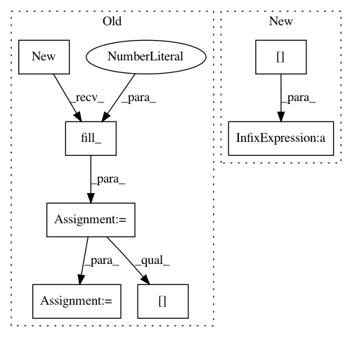

7b8716403efd3cee3fd62f50d2e2e4b2183a90b6,torch_geometric/nn/functional/cheb_conv.py,,cheb_conv,#Any#Any#Any#Any#Any#,7
Before Change
edge_attr = x.data.new(e).fill_(1)
// Compute degree.
degree = x.data.new(n).fill_(0).scatter_add_(0, row, edge_attr)
degree = degree.pow_(-0.5)
// Compute normalized and rescaled Laplacian.
edge_attr *= degree[row]
edge_attr *= degree[col]
lap = SparseTensor(edge_index, -edge_attr, torch.Size([n, n]))
// Convolution.
After Change
// Compute normalized and rescaled Laplacian.
deg.pow_(-0.5)
lap = -deg[row] * edge_attr * deg[col]
// Convolution.
Tx_0 = x
out = torch.mm(Tx_0, weight[0])
In pattern: SUPERPATTERN
Frequency: 3
Non-data size: 7
Instances
Project Name: rusty1s/pytorch_geometric
Commit Name: 7b8716403efd3cee3fd62f50d2e2e4b2183a90b6
Time: 2018-04-30
Author: matthias.fey@tu-dortmund.de
File Name: torch_geometric/nn/functional/cheb_conv.py
Class Name:
Method Name: cheb_conv
Project Name: rusty1s/pytorch_geometric
Commit Name: 94ecd2ae789c038e2e8ed9ed8e83f9adfe3eb447
Time: 2018-05-02
Author: matthias.fey@tu-dortmund.de
File Name: torch_geometric/utils/softmax.py
Class Name:
Method Name: softmax
Project Name: rusty1s/pytorch_geometric
Commit Name: 09e572cef1dc655bfc5255ecd0b3787512609e3d
Time: 2018-04-30
Author: matthias.fey@tu-dortmund.de
File Name: torch_geometric/nn/functional/graph_conv.py
Class Name:
Method Name: graph_conv